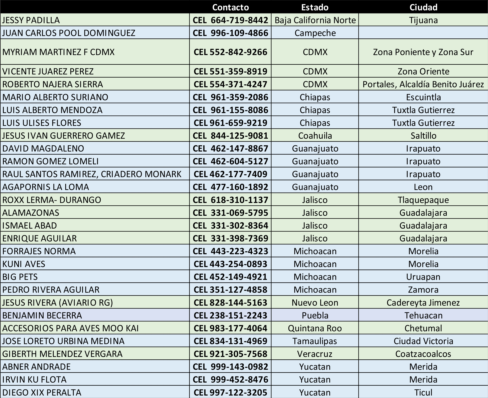
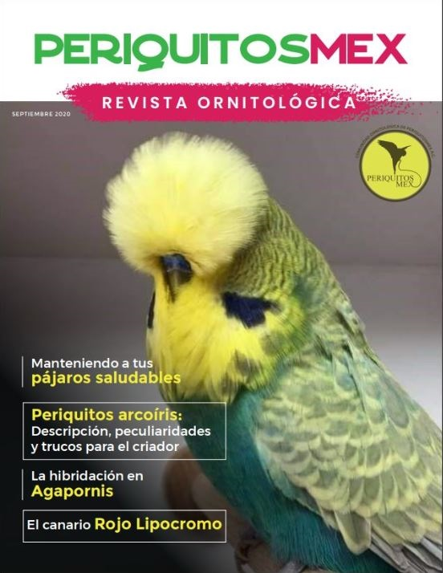
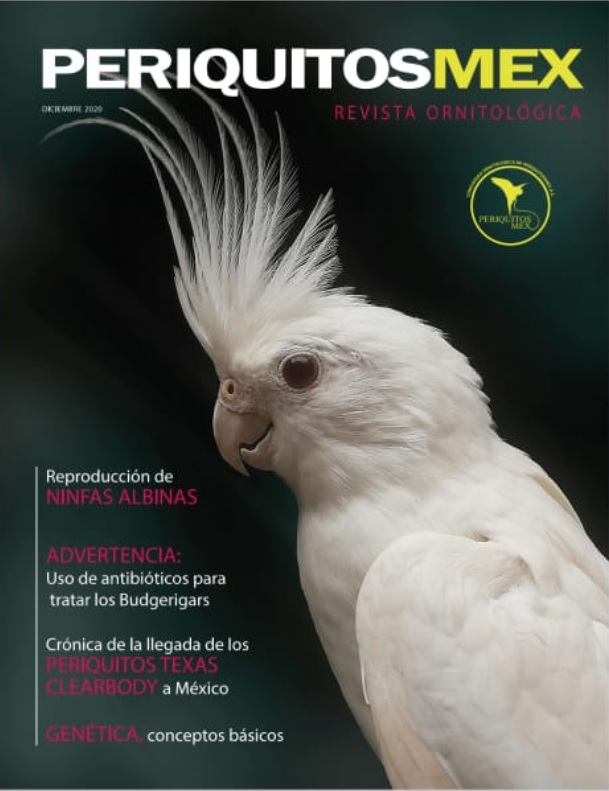
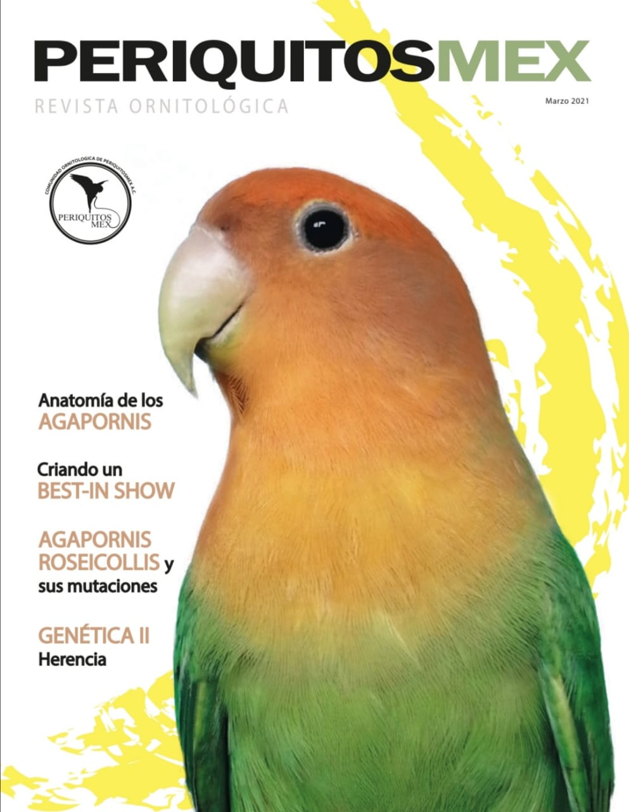

Donde comprar la revista PeriquitosMex?

Revista Ornitológica PeriquitosMex - Septiembre 2020 - #1
- Bienestar aves de ornato (Lizbeth Pancardo Guzman)
- El ejercicio físico en voladeras (Adrian Guzman)
- Manteniendo a tus pájaros saludables (Bob Wilson)
- Descripción, peculiaridades y trucos para el criador, periquitos arcoiris (Francisco Planchadell)
- Un poco de historia del periquito australiano (Delfino Rosales)
- Introducción a los agapornis (Juan Contreras)
- La hibridación en agapornis (Pinyeres Assens - Phoebe)
- Mi experiencia y recomendaciones como criador de aves (Jorge Escobedo)
- El canario rojo lipocromo (MCP Francisco Javier Camargo Casillas)
- Entrevista a: Ing. Agr. David Montañez Valencia

Revista Ornitológica PeriquitosMex - Septiembre 2020 - #2
- Beneficios del vinagre de manzana (Lizbeth Pancardo Guzman)
- Sobre pluma y mudas (Delfino Rosales)
- 11 Puntos básicos para una buena salud de tus aves (Cristian Arturo Aleriano Garcia)
- Periquitos arcoiris II: Definición de un proyecto a partir de ejemplares de fácil adquisición (Francisco Planchadell)
- Reproducción de ninfas albinas (Mari Carmen Garrido - Mari Bichos
- Buena crianza en pericos kramer (Manolo Barragan - Aviario Casa Macao)
- Conceptos básicos de genética (Salvador Riambau)
- Forpus coelestis (Carlos Borboa - Periquitos CAB)
- Advertencia: Uso de antibióticos para tratar a los periquitos (Bob Wilson)
- Crónicas de la llegada de los periquitos texas clearbody a México (Jessy Padilla Fonseca)
- Entrevista a: MVZ. Carlos Fuentes

Revista Ornitológica PeriquitosMex - Marzo 2021 - #3
